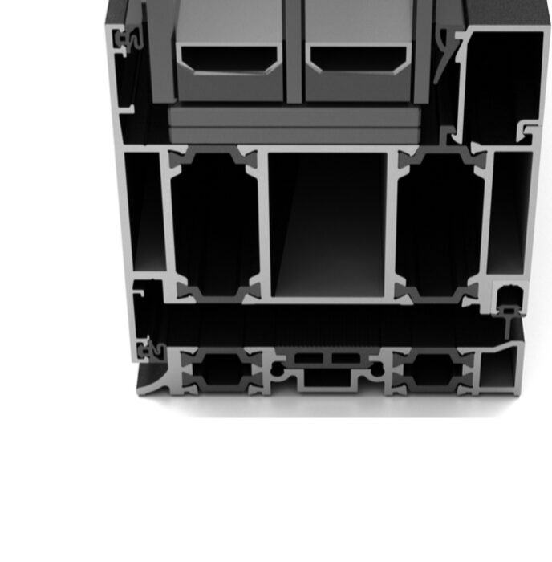
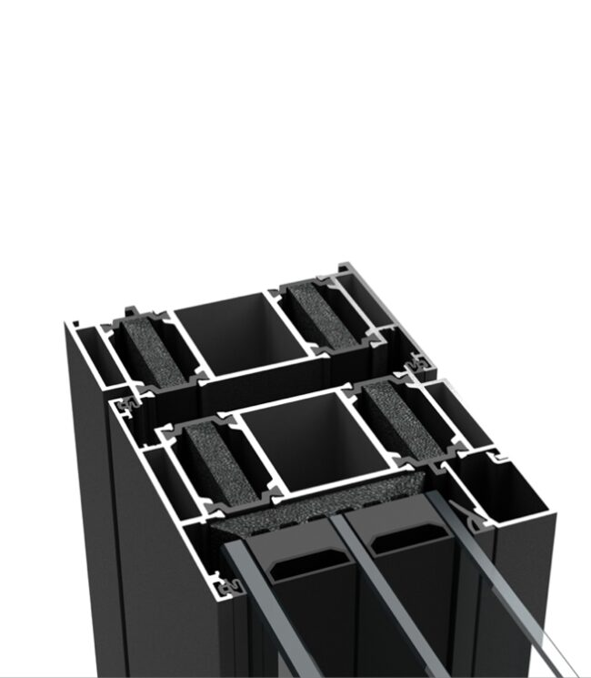

VIKING 90
в интро

- «глубиной профиля 90 мм для окон, внутреннего открывания»
- «стеклопакет толщиной до 58 мм»
- «изоляционными перемычками из инновационных композитов»
- Дверь: «узкими видимыми областями и большей глубиной профиля», «многокамерными профилями и инновационной изоляционной зоной»
- Соответствие EnEV и стандартам пассивного дома (по тексту сайта)
| Теплопроводность, EN ISO 10077-2 | Uf ≥ 0,86 W/m²K* |
| Водопроницаемость, EN 12208 | класс ≥ 9A |
| Воздухопроницаемость, EN 12207 | класс 4 |
| Ветровая нагрузка, EN 12210 | C5 / B5 |
| Механическое напряжение, EN 13115 | класс 4 |
| Антивандальность, EN 1627 | RC1 N…RC3 |
| Звукоизоляция, EN 10140 | Rw 49 дБ* |
* Таблица-картинка в блоке VIKING 90. В ней «Uf ≥», хотя для U-значения обычно пишут «≤», а по звуку в русской колонке «выше 49 дБ», в английской «up to 49 dB». Неясно, к окну или к двери относится таблица. В интро эти цифры не берём до подтверждения.